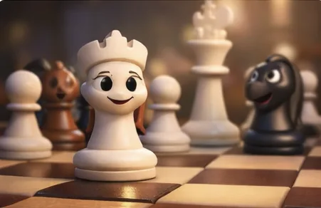
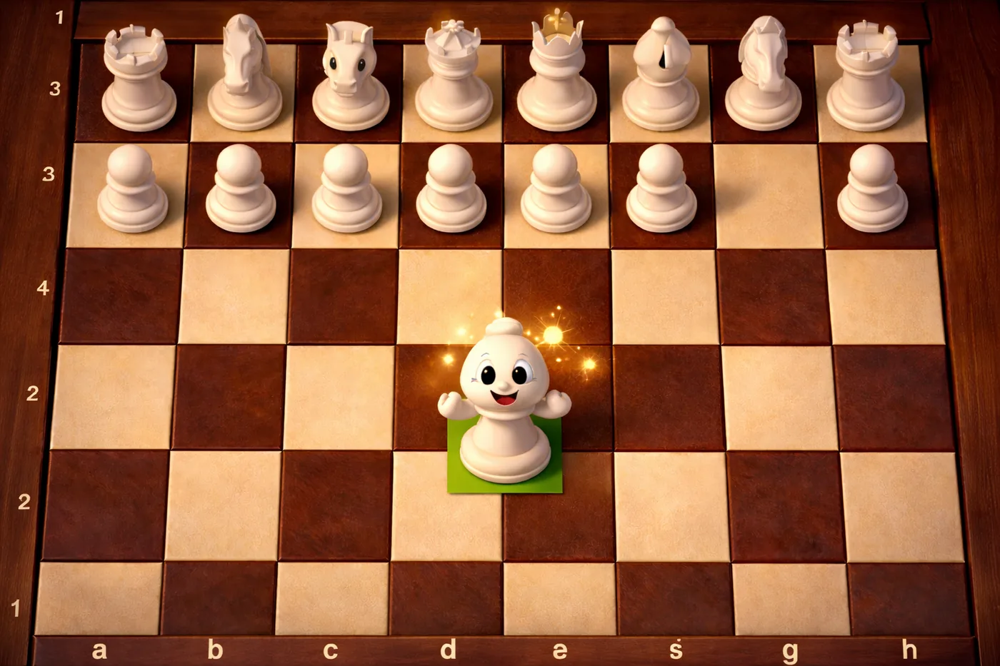
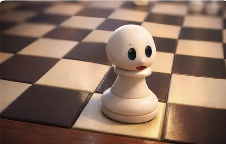
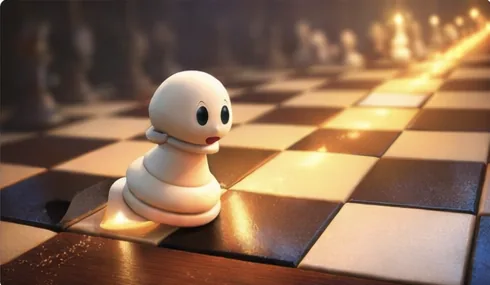
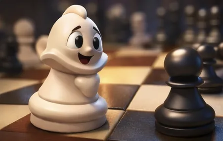
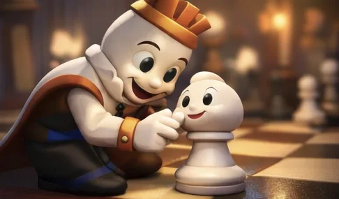

En un tablero de ajedrez vivían piezas que siempre hacían lo mismo. El peón del centro avanzaba primero, la reina esperaba, y los caballos saltaban cuando les tocaba.

Pero había un peón pequeño, en el borde del tablero, llamado Beto, que soñaba con algo distinto.
—¿Por qué siempre deben empezar los mismos? Yo también quiero ayudar al Rey.

Un día comenzó una nueva partida… y ocurrió algo inesperado.
—¡b3! —susurró el tablero sorprendido.

—¿Tú? ¿Empezar la partida? —dijo un caballo.
—Eso no es lo normal —murmuró una torre.
Pero Beto sabía que estaba abriendo un camino.

Gracias a su paso valiente, el alfil encontró una diagonal larga y libre.
—Gracias, pequeño peón. Ahora puedo ver lejos.
El enemigo no entendía qué estaba pasando. Movimiento a movimiento, el juego se llenó de ideas nuevas. Nada era predecible. Nada era apresurado.

—No siempre hay que seguir el camino más transitado. A veces, pensar diferente es la mejor estrategia.
Desde entonces, cada vez que alguien veía avanzar un peón del costado, recordaba al pequeño Beto.
✨ La Apertura Nimzo-Larsen nos enseña que pensar distinto también es una forma de ser valiente.